Architecture, Drivers & MCP Reference
BerryDB is a native macOS database workbench and Model Context Protocol (berrydb-mcp) server compiled to Apple Silicon ARM64 with Swift 6 and AppKit. Rather than wrapping Chromium or a Java runtime, it uses NSTableView virtualized grids, macOS Keychain storage, Citadel pure-Swift SSH tunnels, Apple Intelligence or Cloud AI SQL assistance, and opt-in read-only MCP live queries across nine engines.
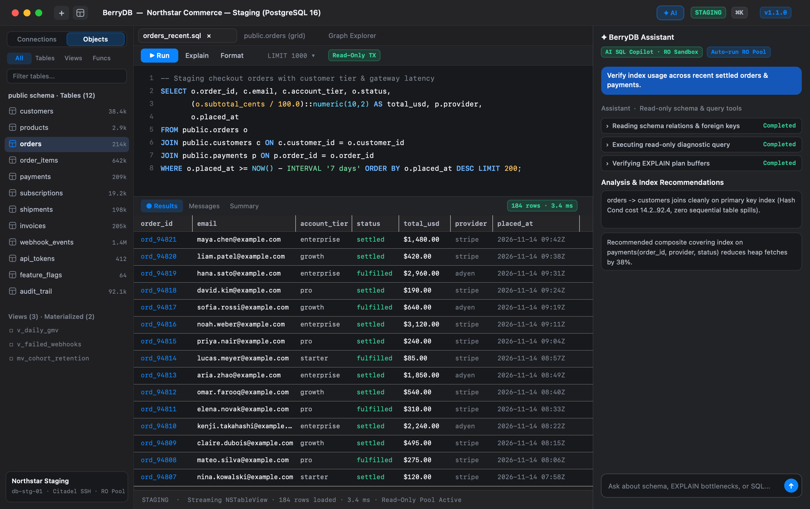
Workspace Anatomy & Navigation
Every BerryDB window isolates connection pools, SSH tunnels, staged edits, and AI threads cleanly into three synchronized panes driven by standard AppKit split views and keyboard responders:
01 Left Catalog & Environment Navigator
Groups connections by environment tag (LOCAL, STAGING, PRODUCTION), schemas, tables, views, collections, and vector indexes. Production tags trigger strict read-only guardrails across AI Copilot and MCP live reads.
02 Center SQL Editor & Streaming Grid
Multi-tab syntax-highlighted query workspace paired with a bottom streaming NSTableView split, inline diff staging bar, and Visual EXPLAIN viewer.
03 Right Row Inspector & AI Copilot
Switch between structured JSON/field inspection for the selected row and context-aware AI SQL generation running via Apple Intelligence or Cloud mode.
04 Universal Command Palette (⌘K)
Fuzzy-jump directly to any cached table, saved query, recent statement, visual EXPLAIN run, or connection switch without lifting hands from the keyboard.
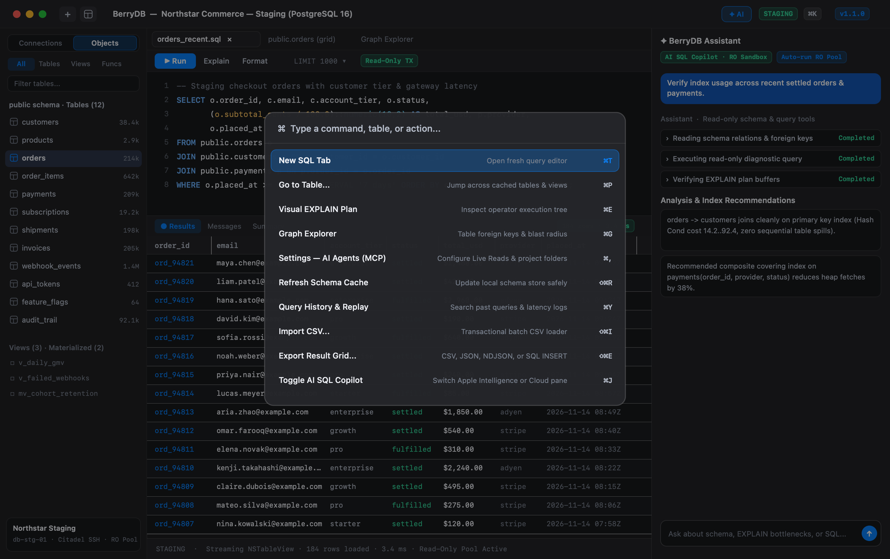
Installation & Source Build
BerryDB targets macOS 15.0 or later on Apple Silicon (arm64). Choose Homebrew Cask for automated upgrades, download the signed DMG directly, or build from the public Apache 2.0 repository.
Option 1 — Homebrew Cask (Recommended)
FastestInstalls both BerryDB.app into /Applications and registers the bundled berrydb-mcp binary.
brew install --cask berry-apps/tap/berrydbOr tap explicitly first:
brew tap berry-apps/tap && brew install --cask berrydbOption 2 — Pre-Built DMG Archive
macOS 15.0+Direct disk image containing the Apple Silicon universal workbench bundle and standalone MCP executable.
Download BerryDB-latest.dmg
Drag BerryDB.app into /Applications. If launching an unsigned local build triggers Gatekeeper quarantine, clear the extended attribute:
xattr -cr /Applications/BerryDB.appOption 3 — Build from Source (Swift 6 + Xcode 16+)
Source builds require FreeTDS headers via Homebrew for native SQL Server (libsybdb) linkage alongside Swift Package Manager dependencies.
git clone https://github.com/berry-apps/berrydb-desktop.git
cd berrydb-desktop
brew install freetds
cp .env.example .env
make run # Compile & launch debug executable
make app # Assemble BerryDB.app bundle + berrydb-mcp helper
Cold-start timing can be verified locally with bash scripts/measure-performance.sh (measured at 0.85s on M1 Apple Silicon, macOS 26.6.2).
Streaming DataGrid & Staged Transactions
Result grids stream directly from wire decoders into an AppKit NSTableView capped at 1,000 rows per interactive query to protect responsiveness. Double-click cells to stage inline modifications highlighted in cobalt and commit everything atomically inside an explicit reviewable transaction.
- Pin Columns & Quick FilterLock key identifiers while scrolling wide analytical projections horizontally at 120Hz.
- JSON & UUID PopoversInspect nested
jsonbdocuments, arrays, timestamps, and explicitNULLtokens cleanly. - Atomic Staged CommitsPreview exact generated
UPDATE/DELETESQL statements before pressing ⌘S.
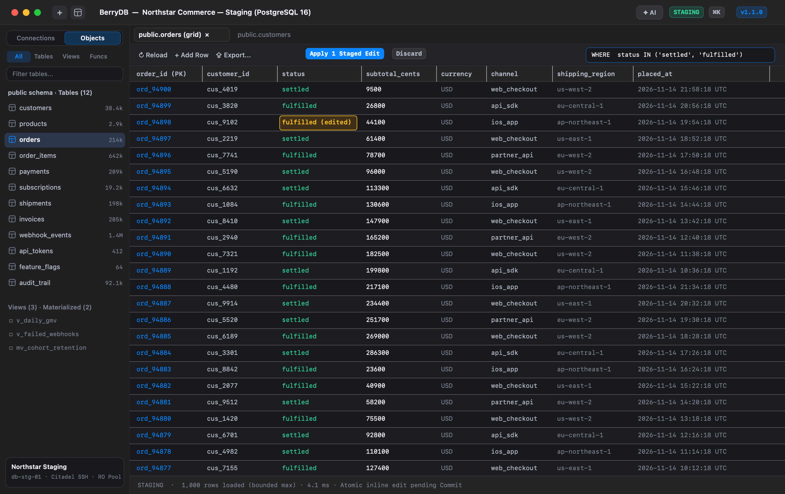
AI SQL Copilot — On-Device & Cloud Modes
BerryDB separates prompt execution modes cleanly so teams can keep sensitive schema context strictly on the Mac or opt into hosted reasoning models when needed.
Where the AI Runs
macOS 26+ On-Device- Apple Intelligence (macOS 26+): Runs locally on Apple Silicon Foundation Models — its turns send nothing to BerryDB's service or external model hosts.
- Cloud Mode: Dispatches schema metadata and user prompts over TLS to the configured cloud provider for multi-table analytical queries.
- Cloud Switching Caveat: Switching an existing on-device conversation to Cloud mode warns explicitly before sharing prior local turn context with remote APIs.
What Runs Without Asking
Separate RO Connection- Auto-Run Safe SELECTs: When enabled on PostgreSQL, MySQL/MariaDB, or SQLite, read queries execute over a separate read-only connection (
BEGIN READ ONLY/PRAGMA query_only). - SQL Server & DynamoDB: Validated by BerryDB's client-side read-only statement check prior to dispatch.
- Approval Card & Prod Lock: Any blocked or mutating statement (
INSERT,UPDATE,DELETE, DDL) opens a human approval card. Auto-execution is disabled by default on production-labeled connections.
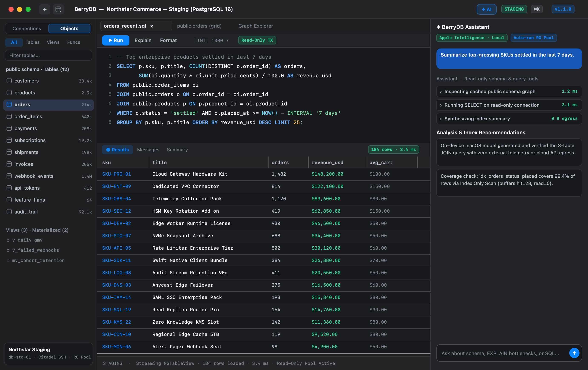
Coding Agents & Guarded MCP Live Reads (berrydb-mcp)
BerryDB ships a standalone stdio MCP executable inside the application bundle at
/Applications/BerryDB.app/Contents/MacOS/berrydb-mcp.
External coding assistants — including Claude Code, Codex, Antigravity, and Cursor — operate in two distinct privilege tiers:
Schema Cache Tools
With opt-in live reads disabled, berrydb-mcp opens BerryDB's local metadata cache read-only. Zero sockets connect to databases and zero credentials are touched in this mode.
Guarded Live Reads (Settings → AI Agents)
Disabled by default. Once explicitly enabled for a vetted profile, agents gain read-only execution via berrydb_execute_read_query (PostgreSQL, MySQL/MariaDB, SQLite) and berrydb_dynamodb_query (DynamoDB).
Complete MCP Tool Specification (8 Tools)
| Tool Name | Mode | Purpose & Execution Behavior |
|---|---|---|
| berrydb_list_connections | Cache | Returns configured profile IDs, engines, environment tags, opt-in state, and live_read_until expiry timestamp. |
| berrydb_list_tables | Cache | Lists cached schemas, tables, views, or DynamoDB table descriptors for a connection ID. |
| berrydb_describe_table | Cache | Inspects cached column definitions, types, nullability, defaults, primary keys, and indexes. |
| berrydb_search_schema | Cache | Fuzzy searches table names and column identifiers across all locally indexed connections. |
| berrydb_get_relationships | Cache | Traverses cached foreign-key constraints and entity edges to resolve join paths safely. |
| berrydb_get_database_summary | Cache | Emits compact structural topology metrics sized specifically for coding agent context windows. |
| berrydb_execute_read_query | Live Read | Runs a single read-only SQL statement wrapped in a server-enforced read-only transaction (BEGIN TRANSACTION READ ONLY / SET TRANSACTION READ ONLY / PRAGMA query_only = ON) on PostgreSQL, MySQL/MariaDB, or SQLite. |
| berrydb_dynamodb_query | Live Read | Executes a single DynamoDB Query operation keyed by partition key (KeyConditionExpression). Full-table Scan calls are permanently rejected. |
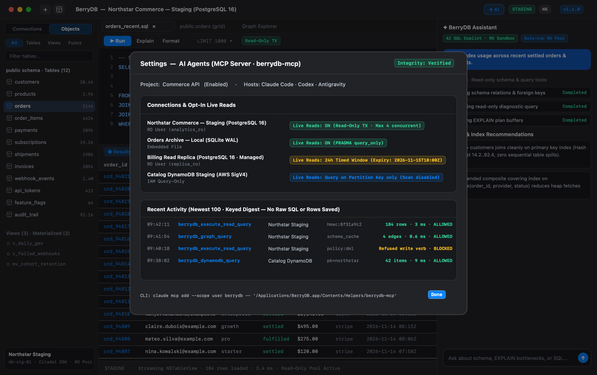
live_read_until), masked column filters, and HMAC-SHA256 Recent Activity trail.
Engine Availability Matrix (Schema Cache vs. Live Reads)
| Engine | Schema Cache Tools | MCP Live Reads (Opt-In) | Isolation Mechanism / Notes |
|---|---|---|---|
| PostgreSQL / MySQL / MariaDB / SQLite | Available | Available | Single statement inside engine read-only transaction via berrydb_execute_read_query. |
| AWS DynamoDB | Available | Available | Partition-key Query only via direct IAM auth; SSH tunnel live reads unsupported. |
| Microsoft SQL Server | Available | Excluded | Cached schema metadata available; MCP live reads excluded in this release. |
| MongoDB, Redis / Valkey, Elasticsearch, Qdrant | Excluded | Excluded | Operated interactively within BerryDB Studio; excluded from MCP cache and live reads. |
Security Guardrails & Operational Limits
1. Concurrency, Row & Payload Budgets
Enforces a hard limit of 4 concurrent reads per coding-agent session alongside strict row caps, response-byte limits, and query timeouts. Profiles tagged as production enforce tighter default timeouts and row ceilings automatically.
2. Least-Privilege Database User Checks
Before activating live reads, BerryDB probes effective role capabilities: writable credentials on non-production profiles require explicit warning acknowledgement, while writable credentials on production-labeled profiles are refused — attach a dedicated read-only role or read replica instead.
3. Time-Boxed Production Expiration (live_read_until)
Production-labeled connections never grant permanent MCP access. Operators select an automatic TTL of 1h, 8h, 24h (default), or 7d, stored and returned as live_read_until so agents observe exact revocation boundaries.
4. Best-Effort Column Hiding by Name
Per-connection column exclusion lists strip matching fields (e.g., password_hash, ssn, secret_token) before JSON serialization. Note that name filtering is best-effort: computed expressions or aliases can bypass column-name filters, so enforce column-level REVOKE SELECT or SQL views for strict compliance.
5. MySQL & MariaDB FILE Privilege Caveat
A MySQL SET TRANSACTION READ ONLY block prevents table writes, but accounts still holding server-wide FILE grants could attempt LOAD_FILE() reads if misconfigured. Revoke FILE from the MCP user and verify secure_file_priv on the server.
6. AWS DynamoDB IAM Policy Scope
Scope dedicated IAM credentials strictly to dynamodb:ListTables (*), dynamodb:DescribeTable, and dynamodb:Query. Never grant dynamodb:Scan or write actions. Direct VPC/IAM connectivity is required (SSH tunnels do not proxy DynamoDB live reads).
7. HMAC-SHA256 Signed Recent Activity
Every MCP invocation records connection ID, timestamp, tool name, duration, and status inside a rolling 100-entry audit trail chained with a keyed HMAC-SHA256 signature. Neither raw SQL text nor returned rows are written to disk logs.
8. Where the Data Goes (Prompt Injection & Egress)
Returned rows flow directly over stdio into the connected MCP client (Claude Code, Codex, Antigravity) and subsequently to whatever model provider that host uses. Database text from untrusted user submissions may contain indirect prompt-injection payloads; restrict live reads to vetted schemas.
Configuring External MCP Clients
Register the stdio binary inside Claude Code, Codex, or Antigravity client configuration:
{
"mcpServers": {
"berrydb": {
"command": "/Applications/BerryDB.app/Contents/MacOS/berrydb-mcp"
}
}
}# Claude Code
claude mcp add berrydb /Applications/BerryDB.app/Contents/MacOS/berrydb-mcp
# Codex (~/.codex/config.toml)
[mcp_servers.berrydb]
command = "/Applications/BerryDB.app/Contents/MacOS/berrydb-mcp"Connection Profiles, macOS Keychain & Citadel SSH
Connection metadata persists locally while passwords, SSH passphrases, AWS IAM secrets, and API bearer tokens reside strictly in macOS Keychain. SSH tunneling runs in-process over pure Swift using Citadel — eliminating external SSH subprocess leakage or orphaned port forwards.
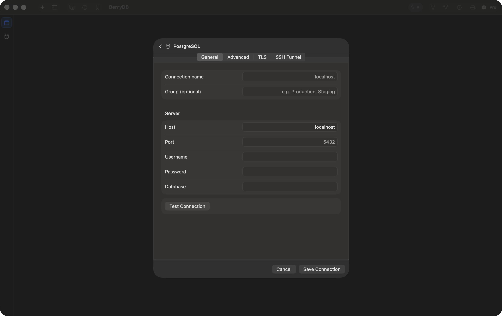
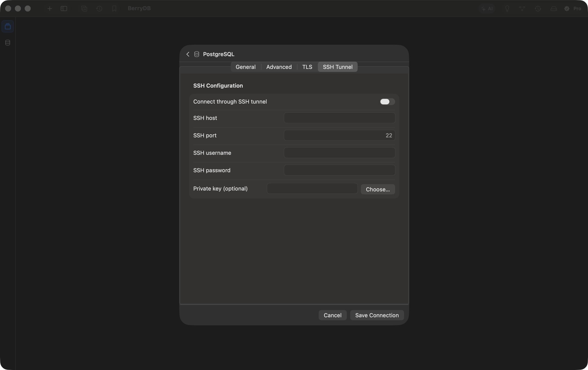
Schema & Indexes Explorer + ER Blast Radius
Audit columns, nullable constraints, default expressions, partial/composite indexes, and foreign-key cascades in structured detail, or open the interactive ER Graph & Blast Radius canvas before running breaking migrations.
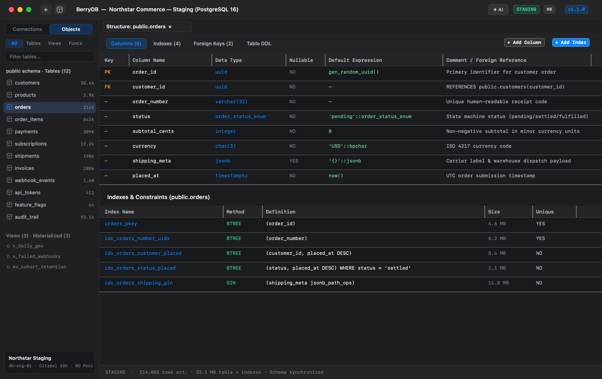
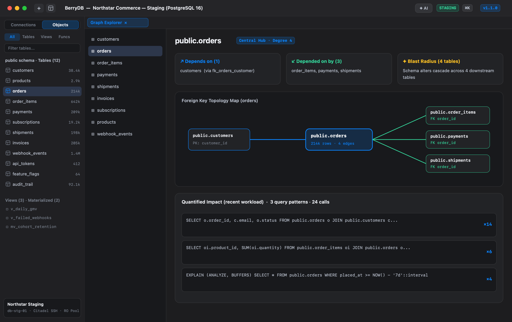
Visual EXPLAIN ANALYZE
Press ⇧⌘E on PostgreSQL or MySQL/MariaDB statements to render an interactive execution plan tree highlighting sequential scans, hash join spills, buffer hits, and relative wall-clock cost percentages.
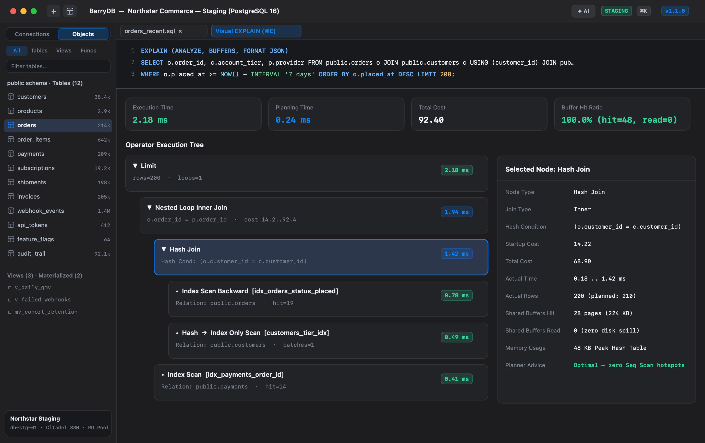
Redis & Valkey Key-Space Inspector
Built directly on valkey-swift, the inspector traverses prefixed namespaces (session:*, queue:*), displays live TTL countdowns and memory estimates, and edits strings, hashes, lists, sets, and sorted sets natively.
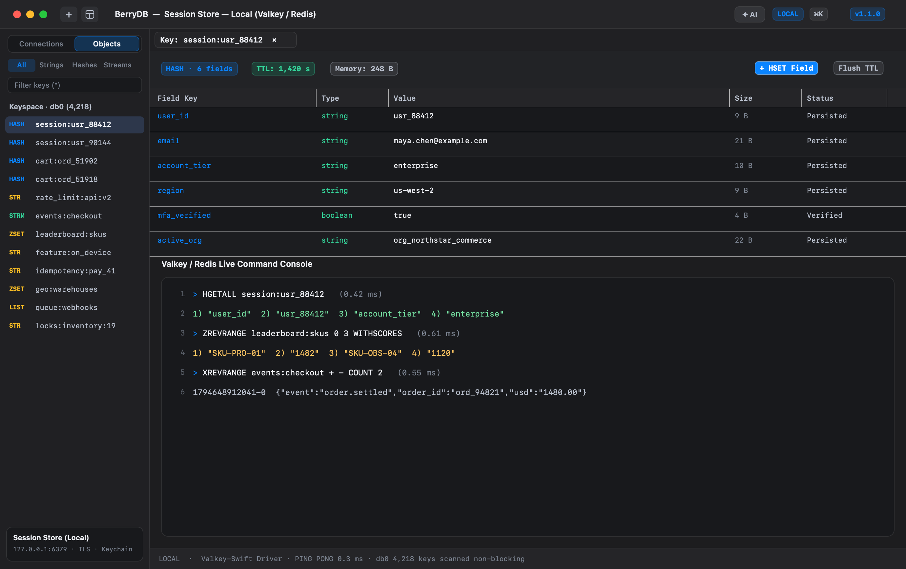
Batch Import & Streaming Export Wizard
Import structured CSV files with header auto-mapping, delimiter configuration, null-string rules, and live row preview, or stream query outputs cleanly into CSV, JSON, and reproducible SQL INSERT scripts.
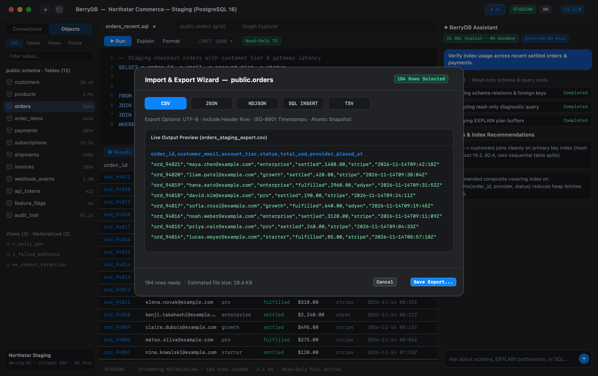
Query History & Statement Replay
Search executed statements by connection profile, execution duration, or row count, inspect execution outcomes, and reopen historical queries directly inside a fresh editor tab.
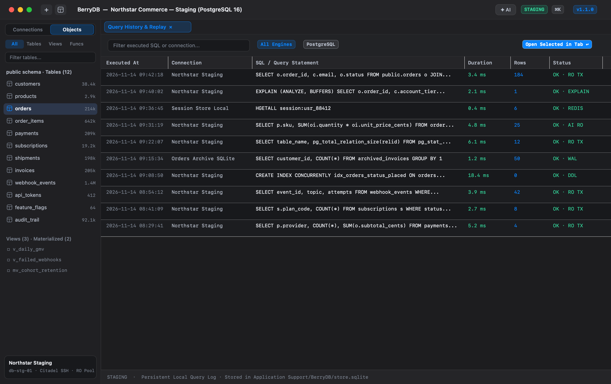
Supported Engines & Native Swift Drivers (9 Engines)
BerryDB links native Swift NIO clients, C system libraries, and signed REST transports directly into the arm64 binary — no JDBC bridge or Python sidecar required.
| Engine | Underlying Driver / Transport | Citadel SSH Tunnel | Verified Test Target |
|---|---|---|---|
| PostgreSQL | PostgresNIO | Supported | PostgreSQL 16 |
| MySQL & MariaDB | MySQLNIO | Supported | MySQL 8.4 |
| SQLite 3 | libsqlite3 (local filesystem) | Local file | SQLite 3 |
| Microsoft SQL Server | FreeTDS (libsybdb) | Supported | SQL Server 2022 |
| Redis & Valkey | valkey-swift | Supported | Valkey / Redis |
| MongoDB | MongoWireClient (SCRAM) | Supported | MongoDB 7 |
| AWS DynamoDB | HTTPS + AWS SigV4 + PartiQL | Direct IAM | dynamodb-local 3.3 |
| Elasticsearch | REST JSON + API Key / Basic Auth | Supported | Elasticsearch 9.5 |
| Qdrant Vector DB | REST HTTP + API Key | Supported | Qdrant 1.10 |
Analytical engines such as DuckDB and ClickHouse are tracked on the open-source roadmap via dedicated C-ABI / HTTP driver packages.
Keyboard Shortcuts Reference
| Shortcut | Action | Scope |
|---|---|---|
| ⌘K | Open Universal Command Palette / Filter Docs | Global |
| ⌘↵ / ⌘R | Execute Current SQL Statement or Buffer | SQL Editor |
| ⇧⌘↵ | Execute Highlighted Selection Only | SQL Editor |
| ⇧⌘E | Run Visual EXPLAIN ANALYZE | PostgreSQL / MySQL |
| ⌘S | Commit Staged Inline DataGrid Changes | DataGrid |
| ⌘T | Open New Query Tab | Workspace |
| ⌘W | Close Active Tab | Workspace |
| ⌘, | Open Settings (General, Appearance & AI Agents) | Global |
| ⌘/ | Toggle Line Comment (--) | SQL Editor |
| ⌘\ | Show / Hide Left Catalog Sidebar | Workspace |
Troubleshooting & Environment Checks
Gatekeeper warning on source-compiled or unsigned builds
If macOS flags a locally compiled bundle, remove the quarantine xattr via xattr -cr /Applications/BerryDB.app before first launch.
FreeTDS headers missing during make run
SQL Server support compiles against Homebrew freetds. Run brew install freetds and re-run make run on Apple Silicon (/opt/homebrew).
berrydb-mcp returns live_reads_disabled or permission refused
Open Settings → AI Agents inside BerryDB, confirm the target profile has Opt-In Live Reads enabled, verify live_read_until has not expired, and ensure production-tagged profiles point to a read-only database user rather than a superuser/writer role.
Apple Intelligence option unavailable in AI SQL Copilot
On-device execution requires macOS 26+ on Apple Silicon with Apple Intelligence enabled in macOS System Settings. On macOS 15 or when Apple Intelligence is disabled, use Cloud mode explicitly.
Support, Issues & Apache 2.0 License
BerryDB is open-source software maintained under the Apache License, Version 2.0. Contributions, protocol test vectors, and security reports are tracked through the public project repositories.
Inspect Swift 6 driver implementations, MCP tests, and release manifests.
Include macOS release, engine type, and anonymized query shapes.
Report MCP guardrail or credential isolation findings privately via GitHub advisories.